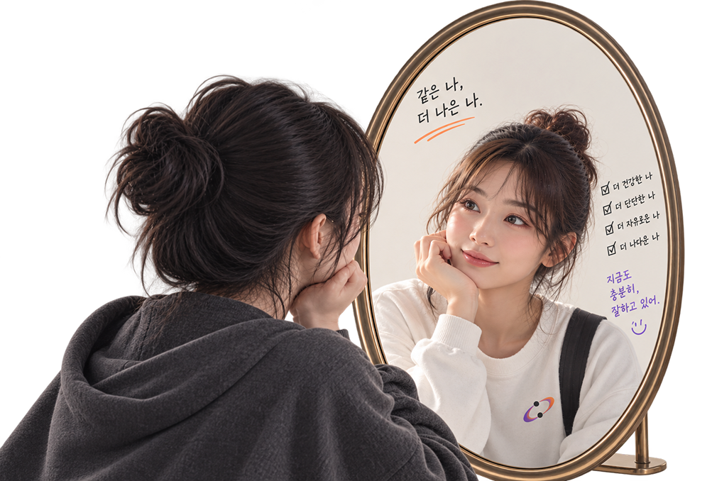
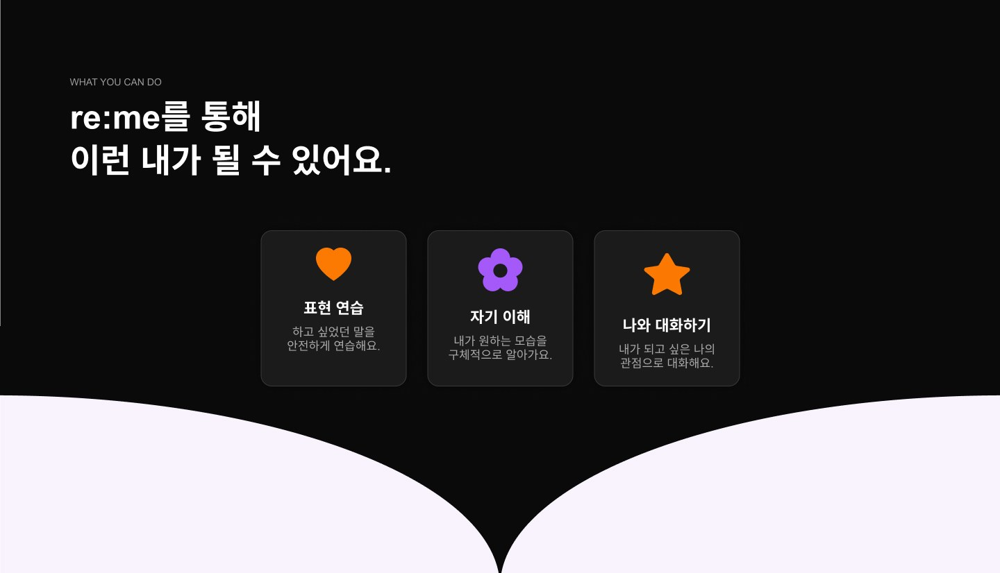
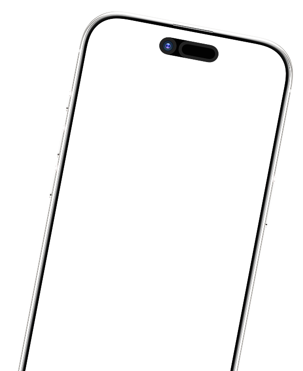
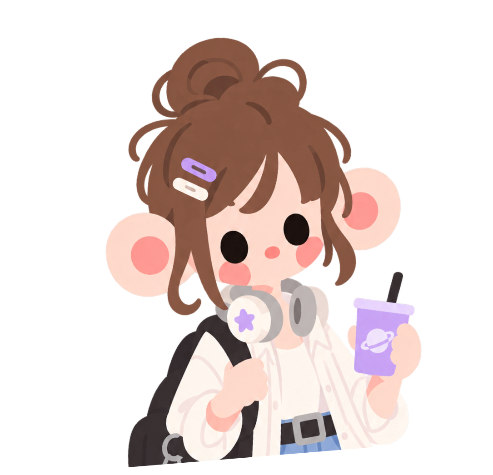
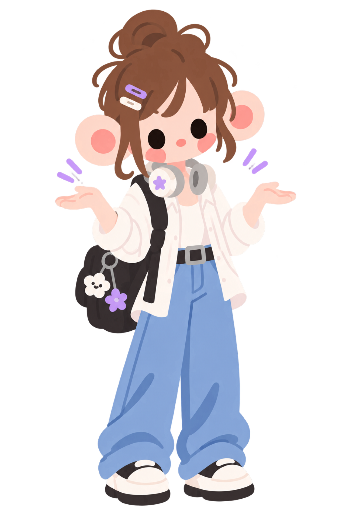

ABOUT RE:ME
지금의 나도 충분히 소중하지만,
가끔 이런 생각이 들지 않나요?
RE:ME는 다양한 상황 속에서
이상적인 내가 될 수 있도록 도와주는 서비스에요.


STEP 01
MBTI처럼 가볍게 질문에 답하고
내가 되고 싶은 모습을 찾아요.
Q. 친구가 무례한 말을 했다면?

STEP 02
지금의 나를 바꾸는 게 아니라
내 안의 ‘되고 싶은 나’를 꺼내요.

지금의 나
신중하고 생각이많은 편이에요.
나의 RE:ME
조금 더 용기있는
또 다른 나!
내가 원하는 나
STEP 03
일상과 고민을 이야기하면
내가 만든 캐릭터의 관점으로 대화해요.

STEP 04
현실에서 하지 못했던 행동을
가상 상황에서 직접 다시 해봐요.
이제 직접 만나보세요
내가 되고 싶은 나